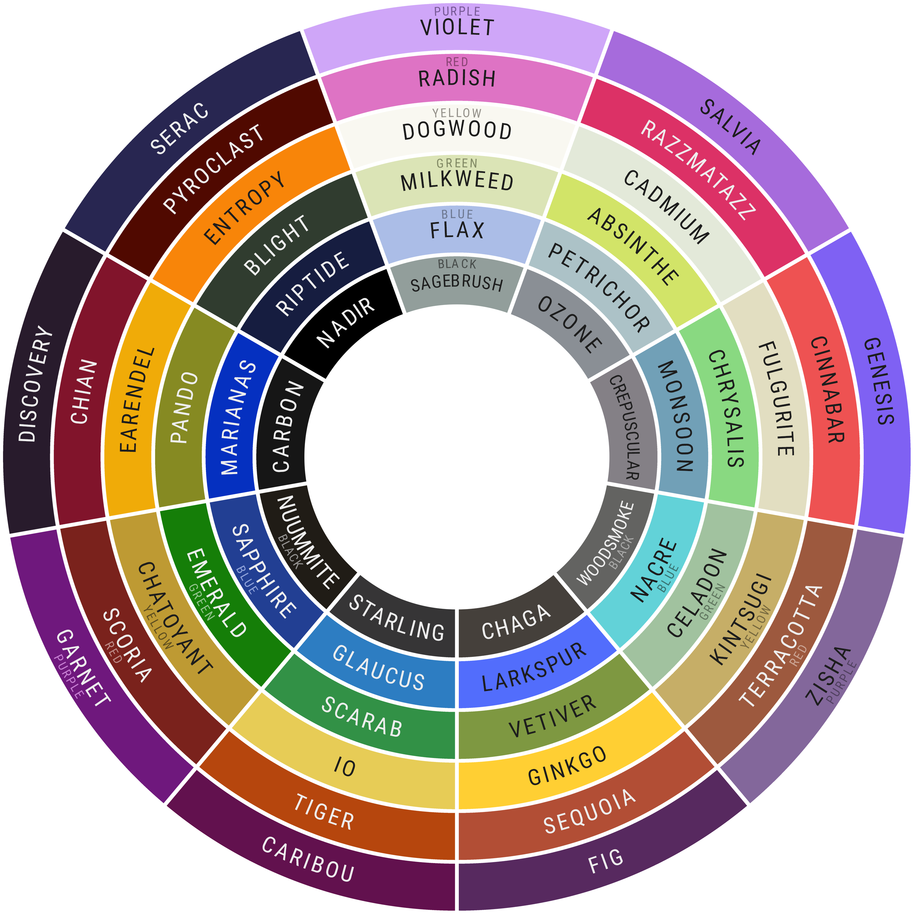

Soul Shades
While several cats will share the same Soul Class, only 2 or 3 cats will share the same Soul Shade. This is the concept of Soul Partners and Soul Trios, and is the primary component of the campaign in terms of what players and their characters will be seeking to discover about themselves and those around them. This information will come over time, through hints of all sorts being dropped by your GM, and in several different ways.Upon piecing together clues and making a correct official guess at a certain point in the campaign, characters who share the same Shade will Soulroot, which unlocks the full breadth of their power and capabilities. More on what this means will be revealed during the campaign.
All of the possible Soul Shades for this campaign will be found down below.

In this campaign, Soul Partners and Soul Trios will be treated a bit differently than in the original Paradise Trials and Paradise Rising, but exactly what it is that will be different will be unveiled within the campaign itself. I plan to put emphasis on what it means to be Soul Partners and a Soul Trio, and try to build fun relationships all around.
That said, these partnerships will still be incredibly diverse and open to interpretation, so don't worry about getting locked into any sort of dynamic! Friends, lovers, family, enemies–
It will be what you make of it in the end!